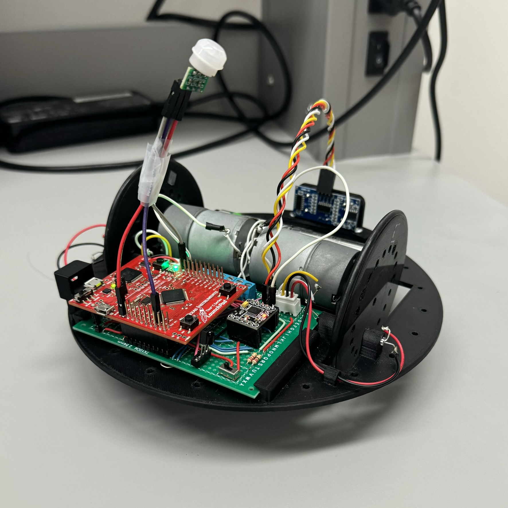
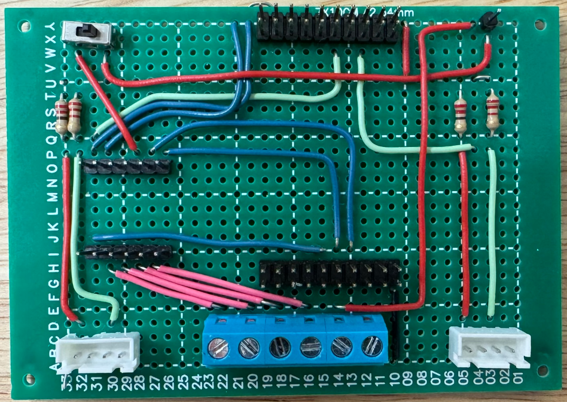
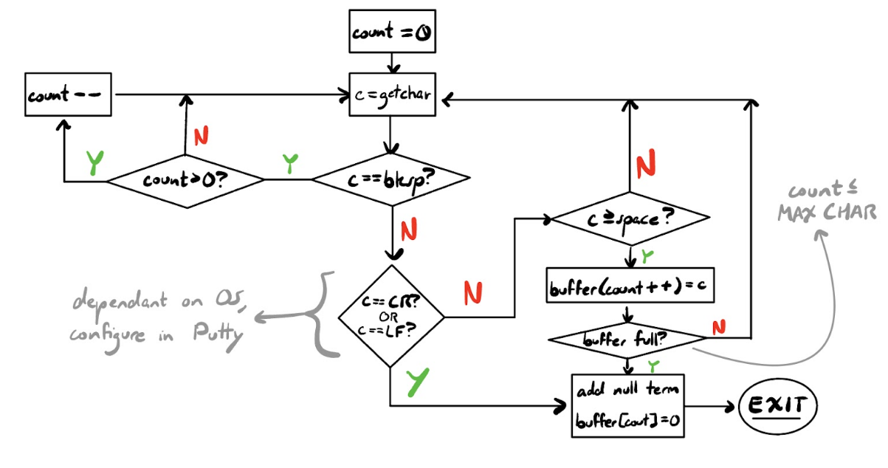
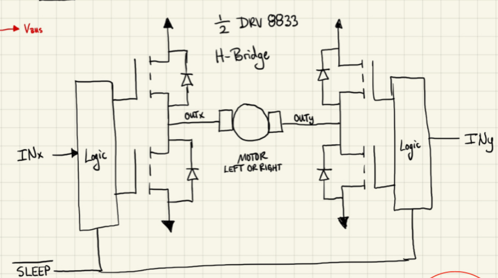

David Denny's Portfolio
Back to the home page
Simple Surveillance Robot:
Intoduction:
This is the culmination of one of my embedded system projects, in which I created a
Simple Surveillance Robot. This report will delve into the theory of operation for the robot,
including some observations about the associated code and the project in general, including some
content from the development stage of this product. Overall, this project has enabled the
understanding of some of the fundamental processes that go into the production of embedded
systems, including both hardware and software.

Theory of Operation and Hardware:
This section of the report will be a broad overview of the operation of my robot, and a
simple explanation of each of the system components used to create it:
The microcontroller specifically used as a foundation for this project is Texas
Instruments’ TM4C123GXL Red Board. This board serves as an optimal board to control this
robot, with enough computational speed to control this robot, running with a 40MHz clock.
My robot’s components, including the Red Board, are built upon a strong, circular,
3D-printed base and wheels. These wheels enable the robot to traverse in a way not dissimilar to
a Roomba. Each of the wheels are driven by their own motor, which is further driven by a
DRV8833 Dual H-Bridge DRV. The inputs into the DRV, driven by Pulse Width Modules
(PWMs) from the microcontroller, facilitate and control the voltage into the motors. With these
tools, each wheel is able to spin independently, both forwards and backwards, to push the robot
forward or backward. You can also spin the wheels in opposite directions to turn either clockwise
or counterclockwise.
This traversal is controlled by us via a Serial Interface (a UART0 module) connected to
the robot, which allows us to send commands to the robot from a computer, with specific
commands such as “forward” and “reverse.”
There are also simple odometry capabilities through the use of two optical
interrupters/phototransistors—one for each wheel. Holes on the wheels allow the passage of light
from two pairs of lights and phototransistors. When spinning and traversing, these holes can be
counted (via interrupts, by constantly breaking the lights connection) to give us an accurate
estimate of the distance traveled by the robot, as there is a concrete distance between each hole.
With this implemented, commands such as “forward 1000” can be sent to the robot, in which the
robot will move forward 1 meter.
Voltage/power is acquired through a battery pack, providing 5V via 4xAA NiMH
batteries, which directly powers the motors, microcontroller, and ultrasonic sensor(s), which will
be discussed later. The powered microcontroller provides a source of 3.3V to other components
as needed. The connections and control of power to each of these components are done through
soldered wires on a green daughter board. A stripped, early version of this daughter board,
including the relative solder connections, can be seen below:

That covers the bulk of the essential operation of the robot, but there are also other
components that enable more features on the robot:
An IR Sensor is included, allowing for the capturing of data from a remote, which allows
us to send commands from the remote by decoding a remote’s NEC protocol. This
enables simple wireless/remote control. Understanding the way the IR Sensor takes in
data from a remote, certain button presses on the remote were assigned to perform
various commands. For example, the forward arrow button on the remote would cause
the robot to move forward, similar to manually entering the “forward” command in the
Serial Interface.
A PIR Sensor is included, which will passively show us if an intruder is detected by
sensing a body’s naturally emitting infrared light. An LED on the controller will alert us
to such motion detected.
An Ultrasonic Sensor is included to calculate a distance from the robot to a wall (using
the speed of sound), allowing the robot to move on its own without interruption or
bumping into walls. This component, when paired with the PIR sensor, really allows us to
make a true “surveillance robot.” For example, an additional mode of operation was
designed in which the robot travels around a room without hitting a wall, and will
periodically stop and check for movement using the PIR sensor.
Code:
This section of the report will delve into my implementation of the coding/software portion
of the project, and my methods to get each hardware component functioning. The raw, original .c and .h
files that enable the operation of the robot can be found in the download link listed below. Most
of these components are broken down into their respective .c files in my implementations.
A list of relevant pin connections can also be found in the zipped folder.
Feel free to peer through these respective files as they are described below.
These files can also be found in my GitHub:
David Denny Zipped Embedded Project Folder
Serial Interface/UART0: The UART0 allows commands to be sent to the robot, and
communicate with it. Characters and strings are taken from the user with the given UART files, and
puts them into a buffer (a character array). We then parse the buffer, and separate those
characters and strings into categories (alphas, numbers, and delimiters) to get solid commands
from a user. These commands interact with the robot in various ways, including traversing an
area with our robot. In the process of creating this project, Putty was used to send data to the
microcontroller via the UART. The process of grabbing these commands from the user is shown in the
flowchart below:

Motors: The motors’ operation is driven via a DRV. The inputs to the DRV take in
compare values via the PWMs (initialized in motor_pwm.c), and control power to our motors.
Commands like “forward” and “reverse” taken from the UART0 will set these compare values,
and provide power to our motors accordingly. For my robot, the max compare value to send to
the motors is 1023, which lets my robot achieve a max speed of around 10,000mm per minute.
One thing to note is my implementation of setStop(), which stops the robot. It is used
many times throughout this project, and sets all motor compare values to 1023. Due to a
quirk/failsafe of the DRV, setting the compare values this way essentially shorts the circuit,
stopping the motors immediately, as opposed to letting momentum persist. This enables accurate
angular movement, as the wheels slowing down on their own lead to haphazard measurements. A
diagram of the DRV’s circuit can be seen below, exposing this quirk:

Odometry: As explained above, the odometry of my robot is facilitated with two pairs of
a light and photoresistor interacting with the holes on our wheels. When light passes through a
hole, an interrupt occurs (leftTimerIsr() and rightTimerIsr()), incrementing a counter for each
individual wheel. These counters are separate for each wheel, and allow for an accurate
measurement of how far the robot has moved. Keeping these counters separate also allows us to
perform course correction in the event that one wheel motor is faster. If leftCounter is faster than
rightCounter, then the compare values are adjusted accordingly. Timers (TIMER1A and TIMER2A) are
also utilized to prevent fuzzy/inconsistent values obtained from during process.
IR Sensor/Remote Control: The IR sensor on my robot is connected to one pin, PC7,
and sends data to our board. I achieve this by having a GPIO interrupt on PC7 that constantly
uses a timer (TIMER0A) like a stopwatch, measuring the clocks/time between GPIO interrupts.
Depending on the length of these interrupts, the robot can receive data from an IR signal (a
remote). After ensuring the data sent is valid through its own routine, the respective command is
executed with runRemoteCommand(). For example, the upwards-facing arrow on the used remote
executed the "forward" command.
Ultrasonic Sensor: An ultrasonic sensor is used to calculate the distance from the robot
to a wall using the following routine: A trigger signal is sent to the sensor by the Red Board,
which begins an echo. A wide timer, WTIMER3B, is used to capture the length of this echo, in
clocks elapsed, which can tell us how far from a wall the robot is. This process is similar to how
the IR Sensor data is collected, and the formula for converting clocks to distance can be found in
findDistance() in ultrasonic_interrupts.c.
Passive IR: The Passive IR Sensor simply issues an interrupt that lights a red LED on
Port F when motion/infrared light is detected. It runs in my rudimentary auto navigation system,
autoNavTimerIsr(), when alarmFlag is set, and the motionIsr() interrupt occurs. Auto navigation
itself works by utilizing a periodic timer, TIMER3A, pinging for distance and performing
necessary functions when needed during the routine. This routine was briefly discussed above,
and simply runs a periodic routine enabling auto navigation in which the robot traverses around
and avoids running into walls, periodically checking for IR signals.
Observations/Conclusion: This project has allowed me to learn the basic aspects of
embedded systems and their production, including hardware and software. Understanding how to
solder parts, utilize microcontroller peripherals, and calling simple interrupts are all foundational
things to know as Computer Engineers. While limited in some regards, the product is truly
something I am proud of. This project has proven itself vital to my understanding of the field in general.
Back to the home page